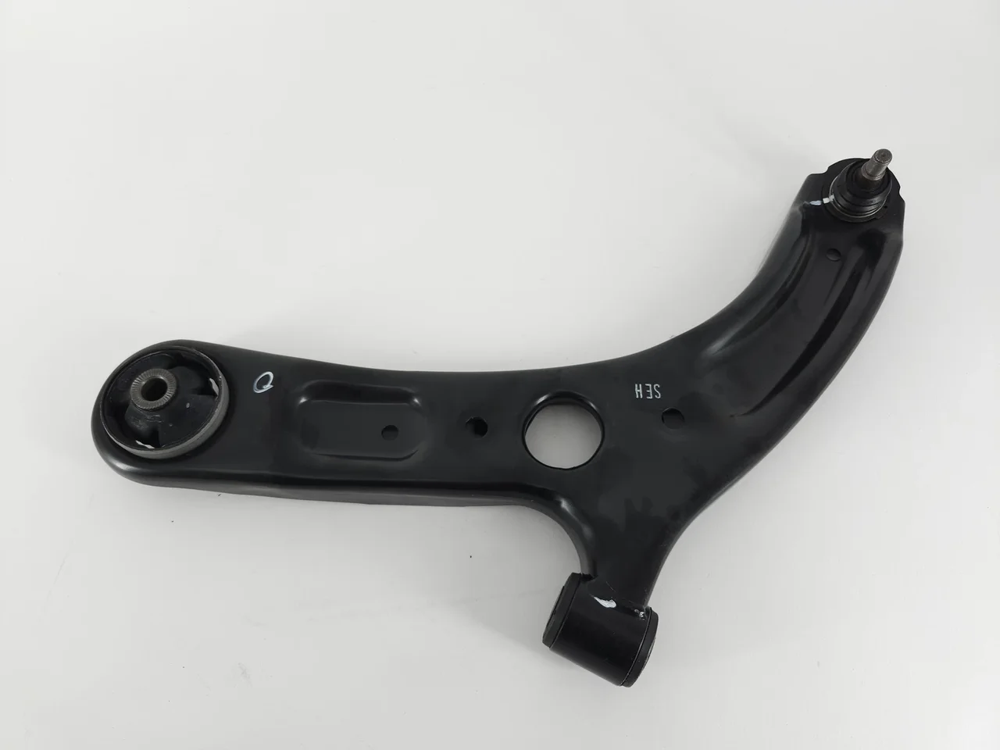

The part number 893407147C is a factory-reference control arm used across selected Audi models. This page gathers the cross-reference data, application list and sourcing details buyers usually need before placing a wholesale order with KingMay.
OE 893407147C is a Control Arm reference. In the Hyundai-Kia numbering system the prefix 89340 denotes the Ball Joint family, which holds 5 references in KingMay's Guangzhou catalog. Wholesale MOQ is 10 pieces; quotes are issued within one business day.
How 893407147C decodes in the Hyundai-Kia catalog system. The prefix identifies the component family; the suffix carries model and variant information.
| Field | Value |
|---|---|
| Full reference | 893407147C |
| Normalized (no hyphen) | 893407147C |
| Prefix (family code) | 89340 |
| Prefix maps to | Ball Joint |
| References sharing prefix 89340 | 5 in KingMay catalog |
| Numbering family | Hyundai-Kia 5+5 format |

Other part numbers frequently ordered together with 893407147C by wholesale clients.
| OE Number | Component |
|---|---|
| 437407151A | Control Arm for AUDI 100 / 5000 C3 Saloon (443, 444), 200 C2 |
| 437407152A | Control Arm for AUDI 100 / 5000 C3 Saloon (443, 444), 200 C2 |
| 441407151A | Control Arm for AUDI V8 (441, 442, 4C2, 4C8), 100 / 5000 C3 |
| 441407152A | Control Arm for AUDI V8 (441, 442, 4C2, 4C8), 100 C3 Avant ( |
| 811407147B | Control Arm for AUDI 80, VW CORSAR |
| 861407151B | Control Arm for AUDI 50, VW POLO |
| 893407148C | Control Arm for AUDI 80, VW CARAT |
| 895407147A | Control Arm for AUDI CABRIOLET B3 (8G7), 4000 B3 Saloon (893 |
References that share the 89340 family prefix with 893407147C. In the Hyundai-Kia numbering system the leading five digits identify the component family, so these numbers usually belong to the same assembly group and are ordered together by distributors building a consolidated shipment. Always confirm the variant suffix, connector layout and dimensions before substituting one reference for another.
Other part numbers in the suspension, steering & brake group that wholesale clients order alongside OE 893407147C. Grouping mixed references into one shipment is how most importers reach full-container freight thresholds.
Browse all 3,012 Suspension, Steering & Brake OE references → · ← Previous in Suspension, Steering & Brake · Next in Suspension, Steering & Brake →
| Item | Detail |
|---|---|
| Export packing | Neutral carton, inner foam protection; custom labels on request |
| Lead time | 7 working days (stock) · 25-35 days (production run) |
| Shipping terms | FOB Guangzhou / Shenzhen; CIF & DDP negotiable |
| Payment | T/T, LC at sight for contracts; sample orders by T/T |
| QC documentation | Packing list + photo report + dimension check per shipment |
The questions below are the ones buyers raise most often about OE 893407147C — fitment, fault symptoms, cross-references, pricing and export terms. Each answer is written to be quotable on its own.
For a short distance at reduced load, usually yes — but the risk compounds. A degraded control arm transfers stress to neighbouring components, so a small repair can grow into a full suspension, steering & brake rebuild. Book the replacement once the symptom is repeatable.
Position depends on the platform. On most Audi applications the control arm sits on the suspension, steering & brake assembly and can be reached from the engine bay or the underbody without removing the dashboard. Torque figures and disassembly order are given in the workshop manual for each model.
The Related OE References table above lists the alternates we see most often in trade inquiries. Cross-references work because the engineering envelope is shared across the suspension, steering & brake family — always confirm dimensions and connector layout before you swap.
OEM means the part was produced for the vehicle maker's assembly line; aftermarket means it is made independently to the same engineering drawing. For a control arm the practical gap is usually tooling age and packaging rather than fit, provided the tolerance class matches.
Report it with the order number and packing-list line plus photographs. Because every carton is photographed before loading, we can trace the batch immediately and settle the claim against the inspection record instead of arguing from memory.
Yes. Sample lots of 893407147C are used by QC teams to benchmark dimension, material and finish before a volume commitment. Send the reference and we will quote the sample alongside the production price.
Buyers searching for OE 893407147C most often land on these pages next.
Send your 893407147C requirement and destination port to our export desk for a landed-cost estimate. All 893407147C shipments leave with a packing list, photo documentation and QC report. Combined orders with other Hyundai-Kia references can share one container to cut landed cost. Payment terms are negotiable for established distributors; first-time buyers are welcome to start with a sample lot.
Send quantity + destination port. Quotations typically return within one business day.